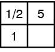
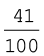
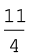
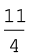
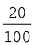
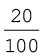

RP6-23 Ratios and Rates with Fractional Terms
Pages 41–43
STANDARDS
6.RP.A.2, 6.RP.A.3
Vocabulary
equivalent ratio
rate
ratio table
Ratios and Proportional Relationships 6-23
Goals
Students will understand that ratios with fractional terms can turn into ratios with whole-number terms through multiplication, and they will
find examples of equivalent ratios.
PRIOR KNOWLEDGE REQUIRED
Understands the fraction of a whole number
Can multiply a fraction by a whole number
Knows units for distance (kilometers and miles)
Knows units for time (weeks and hours)
Understands ratio tables
Fractions of a whole number. Remind students that to find 1/2 of a number, we need to divide the number by 2. For example, 1/2 of 6 apples is 3 apples. ASK: What is 1/2 of 2 apples? (1 apple) SAY: So 1/2 of 2 apples is 1 apple. SAY: Similarly, to find 1/5 of a number, we can divide the number by 5.
ASK: What is 1/5 of 5 apples? (1 apple) SAY: So 1/5 of 5 apples is 1 apple. Ask students to find:
a) 1/3 of 3 b) 1/7 of 7 c) 1/4 of 4 d) 1/12 of 12 e) 1/6 of 6
ASK: What do you notice about the answers? (they are all 1)
Multiplying fractions by a whole number. Remind students that just as you can multiply 5 × 4 by adding five 4s (4 + 4 + 4 + 4 + 4), you can multiply 5 × 1/3 by adding five one-thirds. Write on the board:
1/3 + 1/3 + 1/3 + 1/3 + 1/3 = ?
Have a volunteer write the answer. (5/3) Have students multiply by adding:
a) 3 × 1/4 b) 7 × 1/5 c) 4 × 1/3 d) 5 × 1/2 e) 2 × 1/5
Answers: a) 3/4, b) 7/5, c) 4/3, d) 5/2, e) 2/5
ASK: What do you notice? (The whole number becomes the numerator of the answer; the denominator of the fraction becomes the denominator of the answer.) Now have students multiply without adding:
a) 1/3 × 3 b) 1/4 × 4 c) 1/5 × 5 d) 1/6 × 6 e) 1/7 × 7
ASK: What do you notice about the answers? (they are all 1)
Tell students that you can always turn a fraction into a whole number by multiplying by the denominator.
ASK: What number do you need to multiply by to turn the fraction into a whole number?
a) 1/3 ×  = 1 b) 1/5 ×
= 1 b) 1/5 ×  = 1 c) 3/4 ×
= 1 c) 3/4 ×  = 3
= 3
Answers: a) 3, b) 5, c) 4
Making equivalent ratios from a ratio with fractional terms. Remind students that they can make an equivalent ratio by multiplying (or dividing) both terms in a ratio by the same number. For example, the ratios 2 : 3 and 20 : 30 are equivalent ratios because multiplying both terms in the first ratio by 10 gives the terms of the second ratio. ASK: What number can I multiply by to turn the fractional term of the ratio into a whole number?
a) 1/3 : 4 b) 1/5 : 7 c) 6: 1/2 d) 1/4 : 7
Answers: a) 3, b) 5, c) 2, d) 4
Then have students turn these ratios into ratios in which both terms are whole numbers:
a) 1/3 : 5 b) 2 : 1/4 c) 1/5 : 3 d) 3 : 1/6
Answers: a) 1 : 15, b) 8 : 1, c) 1 : 15, d) 18 : 1
Review ratio tables. Remind students that in a ratio table, they need to multiply each term in a row by the same number to get another row. Have students complete the following ratio tables:
a) b) c) d)
Answers: a) 8, b) 10, c) 9, d) 1
Present the ratio table in the margin and SAY: A ratio table can use fractions too. ASK: What number do you need to multiply by 1/3 to get 1? (3) Use the arrows shown in the margin. ASK: What is the missing number? (12) Write 12 in the empty cell. Have students complete the ratio tables by making both terms whole numbers:
a) b) c) d)
Answers: a) 28, b) 15, c) 1, d) 50
Remind students that in a ratio table, the arrows can point from bottom to top
as well as top to bottom. Then ask students to complete the following tables:
a) b) c) d)

Answers: a) 15, b) 20, c) 12, d) 4
Equivalent ratios with fractional terms. Tell students that you have a muffin recipe that calls for 3 cups of flour and 2 bananas. ASK: What are the different units? (cups of flour and bananas) ASK: How many cups of flour do we need for 1 banana? (as an improper fraction: 3/2) Write on
the board the table at left and explain that the ratios 3 : 2 and 3/2 : 1 are equivalent ratios because by dividing both terms of the ratio 3 : 2 by 2, we get the other ratio. (Here you can say also that by multiplying both terms of the ratio 3/2 : 1 by 2, we get the other ratio.) Tell students that all they need to do to find an equivalent ratio is to multiply (or divide) both terms in one ratio by the same number, so any two ratios in a ratio table are equivalent ratios.
|
Cups of Flour
|
Number of Bananas
|
|
3
|
2
|
|
3/2
|
1
|
a) b) c) d)

1/3 : 6 = 1 : 1/2 : 5 = 1 : 8 : 1/5 = : 1 3/7 : 4 = 3 :
Answers: a) 18, b) 10, c) 40, d) 28
Tell students to use a shortcut: rather than using a ratio table, they can multiply both terms by the same number. For example:
 : 6 = × 3 : 6 × 3 = 1 : 18
: 6 = × 3 : 6 × 3 = 1 : 18
Equivalent ratios and word problems. Tell students that Ben can paint
3 walls in half an hour. ASK: What is the ratio of walls painted to hours?
(3 : 1/2) Can you find an equivalent ratio in which both numbers are whole numbers? (6 : 1) PROMPT: What number do you multiply by 1/2 to get 1? (2)
ASK: Ben has 5 hours this afternoon to paint walls. How many walls can he paint? (6 × 5 = 30)
3 : 1/2 = 6 : 1 = ? : 5 hours
Exercises
a) A recipe calls for 1/3 cup of raisins for every 2 cups of flour.
How many cups of raisins would you need for 12 cups of flour?
b) A newborn Siberian tiger cub gains 2 g every 1/2 hour.
How much does it gain in a day?
Bonus: 1 L is 1,000 mL. A car uses 35 mL of gas for every 1/2 km.
How far can the car go on 35 L of gas?
Answers: a) 1/3 cup of raisins : 2 cups of flour = 2 : 12, b) 2 g : 1/2 h
= 96 g : 24 h, Bonus: 35 mL : 1/2 km = 35 L : 500 km.
For each ratio, find an equivalent ratio with one term equal to 10:
a) 2 : 7 b) 4 : 20 c) 5 : 16 d) 3 : 2
e) 3 : 5 f) 5 : 4 g) 30 : 9 h) 6 : 5
Answers: a) 10 : 35, b) 2 : 10, c) 10 : 32, d) 15 : 10, e) 6 : 10, f) 10 : 8,
g) 10 : 3, h) 12 : 10
Have students write some ratios that they can find in the classroom.
They could include such ratios as boys : girls, teacher : students,
desks : students, tables : students, pencils : students, and square meters
of classroom space : students.
Extensions
1. Have students find equivalent ratios in which both terms are fractional. (To do this Extension, students need to be able to multiply any fraction by a whole number.) Suggest that students break the problem into steps by multiplying by each denominator in turn: first multiply by the first denominator and then multiply by the second denominator. (Always keep the numerators of the fractional terms equal to 1.)
a) 1/3 : 1/4 b) 1/5 : 1/7 c) 1/4 : 1/5 d) 1/3 : 1/5
Answers: a) 1/3 : 1/4 = 1 : 3/4 = 4 : 3, b) 7 : 5, c) 5 : 4, d) 5 : 3
Ask students if they could have multiplied both terms by a single number instead of doing two steps. (Yes; they could multiply by the product of both denominators.) Have students redo the problems this way to see if they get the same answers. Then have students do the following problems to find an equivalent ratio with both terms equal
to whole numbers, but ask students to look for a smaller number they
can multiply by instead of the product of both denominators.
a) 1/4 : 1/10 b) 1/6 : 1/4 c) 1/6 : 1/15 d) 1/15 : 1/10
Answers: a) 5 : 2, b) 2 : 3, c) 5 : 2, d) 2 : 3
Students should multiply by the smallest number that is a multiple
of both denominators—in other words, the lowest common multiple
(LCM) of the two denominators.
2. Have students convert mixed numbers in a ratio into improper fractions and then find an equivalent ratio in which both terms are whole numbers. For example:
3 : 5 =
: 5 =  : 5 = × 3 : 5 × 3 = 11 : 15
: 5 = × 3 : 5 × 3 = 11 : 15
a) 4 : 2 b) 3 : 2
: 2 b) 3 : 2 c) 3 : 4 Bonus: 2
c) 3 : 4 Bonus: 2 : 3
: 3
Answers: a) 21 : 10, b) 12 : 11, c) 19 : 24, Bonus: 11 : 14
3. Have students draw a scale drawing of their living room on 1 cm grid paper (for example, with the scale of 1 foot : 1/2 cm). Mark what measurement each centimeter represents.
Ratios and Proportional Relationships 6-23
RP6-24 Unit Rates with Fractional and
Decimal Terms
STANDARDS
6.RP.A.3
Vocabulary
decimal
decimal fraction
equivalent ratio
rate
ratio table
unit rate
Ratios and Proportional Relationships 6-24
Goals
Students will understand simple multiplicative relationships
involving unit rates.
PRIOR KNOWLEDGE REQUIRED
Knows that a unit rate is a rate with one term equal to 1
Knows units for money (dollars and cents)
Knows units for distance (kilometers and miles)
Knows units for time (weeks and hours)
Review fractions and decimals. Write on the board: .
ASK: How would we change this to a decimal? How many places after the decimal point do we need? (2) How do you know? (There should be 2 places after the decimal point because the denominator is 100; in other words, we are counting the number of hundredths). Ask volunteers to write decimals for the following fractions:
a)  b) c) d) Bonus:
Answers: a) 0.41, b) 0.7, c) 0.92, d) 0.03, Bonus: 2.57
Review converting simple fractions to decimals. Write on the board the two equivalent fractions in the margin. ASK: What number will you multiply by 2 to get 10? (5) Write 5 beside the numerator and 5 beside the denominator. ASK: In the decimal fraction, what is the numerator? (5) Have students convert each fraction to a decimal.

 =
=
a)  b)
b)  c) d)
c) d)  Bonus:
Bonus: 
Answers: a) = = 0.2, b) = = 0.25, c)  = = 0.04,
= = 0.04,
d) = = 0.05, Bonus:  = = 0.125
= = 0.125
Rates and unit rates. Remind students that a rate is the comparison of two quantities in different units. For example, “2 mangoes cost $3” is a rate. The units being compared are mangoes and dollars. Have students identify the units being compared in the following rates:
3 shirts cost $40.
$2 for 3 oranges.
3 tickets cost $5.
Jake is driving at 50 miles per hour.
On a map, 3 cm represents 50 km.
Remind students that one of the quantities in a unit rate is always equal to 1. Give several examples of unit rates, and have students identify the quantity that makes each rate a unit rate.
1 kg of lentils per 4 cups of water. (1 kg makes it a unit rate)
1 coconut costs $1.50. (1 coconut)
$1 for 3 cans of juice. ($1)
1 can of juice costs 35¢. (1 can of juice)
The speed limit is 30 miles per hour. (1 hour)
Unit rates and ratio tables. Tell students that ratios, even part-to-whole ratios, are different from fractions in one important way: The two terms do not have to be whole numbers. Review that knowing a unit rate can help to determine other rates. ASK: If one ticket costs $2.50, how much do two tickets cost? Three tickets? Four tickets? Draw the ratio table at left on the board and explain to students that they can use this table to find the cost of different numbers of tickets.
|
# of Tickets
|
Cost ($)
|
|
1
|
2.50
|
|
2
|
5.00
|
|
3
|
7.50
|
|
4
|
10.00
|
Finding unit rates using ratio tables. Start with an example that does not give a unit rate. ASK: If you know that two avocados cost $7, how can you determine the cost of three avocados? What makes this problem different from the other problems in this lesson? (Instead of starting with the cost of 1 avocado, we are now starting with the cost of 2 avocados; we are not given a unit rate.) Draw the corresponding ratio table in the margin on the board. SAY: To find the missing number, first I need to find the number being divided by in the first column. ASK: What is that number? (2) SAY: Now we can divide by that number (2) in the second column to find the missing number. Write on the board 7 ÷ 2 =  = 3
= 3 and show students how to convert money fractions to decimals:
and show students how to convert money fractions to decimals:
|
# of Avocados
|
Cost ($)
|
|
2
|
7
|
|
1
|
?
|
$ = $3 = $3.5 = $3.50.
= $3.5 = $3.50.
ASK: How would you write 3 1/2 as a decimal? (3.5) Tell students that they would need $3.50 for every 1 avocado. ASK: How does knowing the unit rate make it easy to tell how much money you would need for 3 avocados? (multiply 3 × $3.50) Have students do this calculation. Emphasize that the
amount of money needed is always 3.5 times the number of avocados, so if they know how many avocados they bought, they can deduce how much money they paid. Have students perform this calculation for various numbers of avocados (7, 5, 11). Explain that higher rates can be determined through multiplication of the given rate, but the unit rate can only be determined through division, as this example shows:
If 1 mango costs $2.50, then 3 mangoes cost $7.50 (3 × $2.50).
If 3 mangoes cost $7.50, then 1 mango costs $2.50 ($7.50 ÷ 3).
Assign several problems that require students to determine unit rates using ratio tables. Be sure the answers are not just whole numbers.
Exercises
a) 4 apples cost $1. How much does 1 apple cost?
b) 24 cans of juice cost $6. How much does 1 can of juice cost?
c) 2 cinema tickets cost $19. How much does 1 ticket cost?
Answers: a) $0.25 or 25¢, b) 25¢, c) $9.50
Finding unit rates using ratio tables in two steps. ASK: If you know that three pencils cost 20¢, how many pencils can you buy with one dollar? Write on the board:
20¢ : 3 pencils = $1 : ?
SAY: If I put the ratios in a ratio table, how can I find the missing number? Draw the table at left on the board. SAY: Sometimes it’s better to use a middle step to solve the problem. Every 3 pencils cost 20¢. How many pencils can I buy with 200¢? (30 because 200 is 20 × 10, so 3 pencils must be multiplied by 10, which equals 30) How much is 200¢? ($2) Write the table in the margin on the board. ASK: How can you find the missing number from the ratio table now? (by dividing 30 by 2, because $1 is half of $2) Finally, write on the board:
|
Cost
|
# of Pencils
|
|
20¢
|
3
|
|
$1
|
?
|
|
Cost
|
# of Pencils
|
|
20¢
|
3
|
|
$2
|
30
|
|
$1
|
?
|
30 ÷ 2 = 15, so with $1 we can buy 15 pencils.
Exercises: Use a ratio table to find the unit rate.
a) b) c) Bonus:
Answers: a) 0.4 : 2 = 1 : 5, b) 0.3 : 6 = 1 : 20, c) 4 : 0.8 = 5 : 1,
Bonus: 0.25 : 2 = 1 : 8
Extension
ASK: When a decimal number has one decimal place (for instance 0.7), what is the denominator of the equivalent fraction? (10) When there are 2 decimal places, what is the denominator of the fraction? (100) What do you think the denominator of the fraction will be when there are 3 decimal places? (1000) How would you change 0.00317 to a fraction? How would you change  to a decimal?
to a decimal?
Answers: 0.00317 has 5 decimal places, so the denominator is 100,000 and the fraction is . For we have to put 7 decimal places: 0.0073295.
Ratios and Proportional Relationships 6-24
RP6-25 Proportions and Word Problems
Pages 46–47
STANDARDS
6.RP.A.3
Vocabulary
proportion
ratio
Goals
Students will solve proportions both in isolation and in context.
PRIOR KNOWLEDGE REQUIRED
Can find equivalent ratios
Can find equivalent fractions
Can multiply any fraction by a whole number
Introduce proportions. Define proportion as on AP Book 6.2 p. 46: a proportion is an equation that shows two equivalent ratios. Write on the board the ratio 2 : 3 and SAY: This is the ratio of girls to boys in a class. How can I find an equivalent ratio for the ratio 2 : 3? (by multiplying or dividing both terms by the same number) Write on the board 2 : 3 = 10 : ? and point to the proportion and SAY: I would like to find the missing number in this proportion. SAY: There are two equivalent ratios in a proportion. Should I put the terms in a ratio table? (yes) How do you know? (because in a ratio table, every two rows show two equivalent ratios)
Then draw the ratio table in the margin on the board, write the terms in the table, and write “?” for the missing number. SAY: To find the missing number, you need to find the number you multiply (or divide) each term in one ratio by to get the other ratio. Point to the table and ASK: What number do I need to multiply by in the first ratio? (5) Draw an arrow like in the margin and write “× 5” beside the arrow.
SAY: Multiply the other term in the ratio by 5. ASK: What’s the missing number in the second ratio? (15) Then draw another arrow and erase the question mark and write 15 instead. SAY: Finding the missing term in a proportion is called solving the proportion.
Exercises: Solve the following proportions using ratio tables. Draw arrows to show what you multiply by.
a) 3 : 2 = ? : 6 b) 1 : 5 = ? : 20 c) 7 : 3 = 21 : ? d) 14 : 20 = 70 : ?
Answers: a) 9, b) 4, c) 9, d) 100
Emphasize that when solving a proportion, the direction of the arrows
is always toward the missing number, because solving a proportion
means finding the missing term. Therefore, the arrows may point from bottom to top.
Exercises: Solve the proportions using ratio tables. Note that the arrows point from bottom to top.
a) 12 : ? = 3 : 8 b) ? : 5 = 2 : 20 c) 54 : ? = 9 : 4 d) ? : 52 = 7 : 13
Answers: a) 32, b) 1, c) 24, d) 28
Review multiplying whole number by fractions. Remind students that
× and ÷ are inverse operations. For example:
(5 × 3) ÷ 3 = 5 and (5 ÷ 3) × 3 = 5 and (3 × 5) ÷ 3 = 5
So, 3 × = = (3 × 5) ÷ 3, therefore 3 ×  = 5.
= 5.
Exercises
1. Find the product.
a) 5 × =  b) 4 ×  =
b) 4 ×  =  c) 8 ×
c) 8 ×  = d) 12 ×
= d) 12 ×  =
= 
Answers: a) 7, b) 11, c) 3, d) 4
2. Find the numbers that make the equation true.
a) 3 × = 8 b) 5 ×  = 9 c) 6 ×
= 9 c) 6 ×  = 13 d) 12 × = 20
= 13 d) 12 × = 20
Answers: a) , b) , c) , d)
Use proportions to solve word problems. Write this word problem on
the board: In a pet shop, there are 6 cats for every 8 dogs. There are
12 dogs in the shop. How many cats are there? SAY: To solve the proportion
6 : 8 = ? : 12, you can use a ratio table with a column for cats and a column for dogs. Write the table in the margin on the board.
To find the missing number, ASK: What number do I need to multiply by
8 to get 12? (12/8) SAY: Now multiply 6 by 12/8.
Fill in the table as shown at left.
Emphasize the importance of labeling the columns; if you don’t label them correctly, you could mistakenly put the 12 with the cats and then you would get a different answer. Have students solve the problem that would result from mistaking the columns.
What answer do they get?
gives ? = 16, a wrong answer.
Provide many such problems for extra practice. Keep the same context,
just change the numbers and the position of the words “cats” and “dogs”
in the problems.
Exercises
a) There are 4 cats for every 6 dogs. If there are 10 cats, how many dogs
are there? (15)
b) There are 12 cats for every 10 dogs. If there are 15 dogs, how many cats are there? (18)
Bonus: Include problems that provide or ask for the total number. There
are 8 dogs for every 10 cats. If there are 27 animals altogether, how many cats are there? (12)
Extensions
1. When solving proportions, have students use variables for the
unknown numbers.
Example:
Since 6 × 9 = 54, we must have x × 6 = 48, so x = 48 ÷ 6 = 8.
2. a) Jennifer is reading on her way to work. She reads 3 pages on the 1-mile bus ride. What is the ratio of pages to miles on the bus? (3 : 1)
b) Jennifer gets off the bus and gets on the subway. She reads 6 pages on the 6-mile subway ride. What is the ratio of pages to miles on the subway? (6 : 6 = 1 : 1)
c) For each mile Jennifer travels, what is the ratio of pages read on the bus to pages read on the subway? (She reads 3 pages for every mile on the bus and 1 page for every mile on the subway, so the ratio is 3 : 1.)
d) Jennifer reads at the same rate on the bus as on the subway.
Which travels faster, the bus or the subway? How many times faster? (The subway is three times faster than the bus.)
e) Anna is knitting on her way to work. She knits 120 stitches on the 2-kilometer bus ride, transfers to the subway, and then knits 450 stitches on the 15-kilometer subway ride. How much faster is the subway than Anna’s bus? What assumption did you need to make? (Anna knits 60 stitches for every kilometer on the bus and 30 stitches for every kilometer on the subway, so she knits twice as much for every kilometer on the bus as she does on the subway. Assuming she knits at the same rate on both the bus and the subway, the train is two times faster than the bus.)
f) Whose bus is faster, Anna’s or Jennifer’s? What assumption do you need to make? (Assuming that the subway travels at the same speed for both Jennifer and Anna, Anna’s bus is faster; the subway is
only two times faster than Anna’s bus, but it is three times faster than Jennifer’s bus.)
Ratios and Proportional Relationships 6-25
RP6-26 Using Unit Rates to Solve Problems
Pages 48–49
STANDARDS
6.RP.A.3b
Vocabulary
lowest term
rate
ratio
unit rate
Ratios and Proportional Relationships 6-26
Goals
Students will use unit rates and ratios to solve problems in isolation
and in context. Ratios will involve decimals.
PRIOR KNOWLEDGE REQUIRED
Can find equivalent ratios
Can find equivalent fractions
Can solve proportions
Review unit rates. Explain that knowing a unit rate can help to determine other rates. ASK: If one shirt costs $8, how much do two shirts cost? Three shirts? Four shirts? ($16, $24, $32) Draw a map with two cities joined by a line. SAY: Assume that 1 cm represents 10 km. ASK: Based on using a meter stick to measure the line, who can tell me the distance between the cities? How can you explain your calculation? ASK: If 1 cm on a map represents 2 miles, how much does 3 cm represent? (6 miles) How much does 7 cm represent? (14 miles) 4.5 cm? (9 miles) Two schools are 6 miles apart.
How far apart should they be drawn on the map? (3 cm) Two buildings are 11 miles apart. How far apart should they be drawn on the map? (5.5 cm)
Exercises: Assign several problems that require students to determine unit rates. Include some problems with decimal and fractional answers.
a) 4 pears cost 80¢. How much does 1 pear cost?
b) 3 teachers supervise 90 students on a field trip.
How many students does each teacher supervise?
c) 2 books cost $15. How much does 1 book cost?
d) 8 cans of juice cost $12. How much does 1 can of juice cost?
Answers: a) 20¢, b) 30, c) $ = $7
= $7 = $7.50, d) $ = $1.50
= $7.50, d) $ = $1.50
Problems that require reducing to lowest terms. First, make sure students can comfortably identify whether one term of one ratio is divisible by the corresponding term of the other ratio. Examples:
a) ? : 10 = 30 : 25 b) 4 : 10 = 16 : ?
In the first ratio, 10 does not divide evenly into 25, so the answer is no;
in the second, 4 does divide evenly into 16, so the answer is yes. Then, have students decide whether they need to reduce the complete ratio in each question to lowest terms before they can solve the proportion. Students can solve some problems more easily by reducing a ratio to lowest terms. For example, in the proportion 9 : 6 = ? : 4 students could solve the proportion using the ratio table in the margin, but this would require multiplying by the fraction 4/6, and 4 does not divide evenly into 6.
However, if students reduce the complete ratio to lowest terms, then the proportion is easier to solve:
9 ÷ 3 : 6 ÷ 3 = ? : 4 thus 3 : 2 = ? : 4, so the missing term is 6.
Have students solve the proportion by first reducing the complete ratio to lowest terms.
a) 12 : 9 = 8 : ? b) 6 : 15 = ? : 20 c) 56 : ? = 16 : 6 d) ? : 22 = 12 : 33
Answers: a) 6, b) 8, c) 21, d) 8
Word problems involving ratios. Start with the following problem. SAY: Neptune orbits the Sun 3 times in the same time it takes Pluto to orbit the Sun 2 times. ASK: How many orbits does Neptune complete in the time it takes Pluto to orbit the Sun 9 times?
Ask a volunteer to write the proportion on the board:
3 : 2 = ? : 9
ASK: Does 2 divide into 3 evenly? (no) Is it possible to reduce the ratio to lowest terms? (no) Then draw the ratio table in the margin on the board to find the unit rate. SAY: Now, after finding the unit rate, I can add another row to the ratio table to solve the proportion. Then add the third row to the ratio table in the margin.
|
Neptune
|
Pluto
|
|
3
|
2
|
|
1.5
|
1
|
|
13.5
|
9
|
Exercises: Solve the problem.
a) On a map, 2 cm represents 5 km. If a lake is 7 cm long on the map, what is its actual length?
b) There are 6 boys for every 10 girls on a school trip. If there are 35 girls, how many boys are there? (Students will need to reduce the given ratio to lowest terms before solving the proportion.)
Answers: a) 17.5 km, b) 21
Extensions
Have students determine the unit rates and then solve the proportions
in the following problems.
a) If 4 books cost $18, how much do 6 books cost?
b) If 8 pairs of socks cost $26, how much do 5 pairs cost?
c) If 4 L of soy milk costs $10, how much does 5 L cost?
RP6-27 Changing US Customary Units of Length
RP6-28 Using Unit Rates to Convert Measurements
Pages 50–53
STANDARDS
6.RP.A.3d
Vocabulary
foot (ft)
inch (in)
mile (mi)
yard (yd)
Ratios and Proportional Relationships 6-27, 6-28
Goals
Students will use unit rates to convert units of measurement.
PRIOR KNOWLEDGE REQUIRED
Is familiar with fractions and mixed numbers
Can convert between mixed numbers and improper fractions
Can multiply fractions and mixed numbers by a whole number
Is familiar with miles, yards, feet, and inches
Materials
BLM Spinner Template (p. K-22)
Review the approximate size of the US customary units of length.
Tell students that an inch is about the width of two of your fingers, a foot is about the distance from your knuckles to your elbow, a yard is about the length of a very large step, and a mile is the distance you can walk in about 25 minutes. (Approximations are for students about 11 years old.)
Review the relationships between different US customary units of length. Draw the stair diagram in the margin on the board but without the arrows and numbers on it; you will add the arrows and numbers later. Remind students how many smaller units are in the next larger unit
(12 inches in 1 foot, 3 feet in 1 yard, 1,760 yards in 1 mile).
|
mi
|
× 1,760
|
|
|
|
yd
|
× 3
|
|
|
|
|
ft
|
× 12
|
|
|
|
|
in
|
|
|
|
|
|
|
|
Remind students that you need more of a smaller unit than a larger unit
to measure a given amount of space. For instance, you will need more inches than feet to measure a given road length because inches are smaller than feet. Draw the diagram below on the board (to scale if possible)
to illustrate the point.
0 1 2 3 4 5 6 7 8 9 10 11 12 13 14 15 16 17 18 19 20 21 22 23 24
Converting between adjacent units. ASK: As you go down the stairs, do the units become larger or smaller? (smaller) So when you go down the stairs, do you need more units or fewer units to measure a distance? (more units) When you go down the stairs, will you multiply or divide? (multiply) Add arrows going down the stairs to your diagram on the board. ASK: How many times smaller are the units at each step? Check each step and add the rate you multiply by to the diagram.
Repeat the questions for going up the stairs and add the arrows and the rates to your diagram. Solve several conversion questions together as a class (working through them systematically, one step at a time), and
have students practice individually. For more practice, they can use
the Activity below.
Exercises: Convert.
a) 12 ft to yd b) 18 yd to ft c) 15 ft to in
d) 48 in to ft e) 3 mi to yd f) 52,800 yd to mi
Answers: a) 4 yd, b) 54 ft, c) 180 in, d) 4 ft, e) 5,280 yd, f) 30 mi
Review multiplying a fraction by a whole number and writing the answer as a mixed number. Show a few examples, such as 5/8 × 3,
3/16 × 12, and 1/4 × 12. Do not progress until all students can multiply a
fraction by a whole number and write the answer as a mixed number.
Converting fractions of units to smaller units. Show students how to convert a measurement such as 3/8 of a yard to feet. Suggest that students recall how they solved a similar but simpler problem. ASK: What did you
do to convert 2 yards to feet? (multiplied by 3) Suggest that students do
the same with a fraction of a yard:
yd =  × 3 ft = ft = ft
× 3 ft = ft = ft
ASK: Is 9/8 a proper fraction? (no) Have students convert the improper fraction to a mixed number:  ft = 1
ft = 1 ft
ft
Repeat with several more examples, converting a fraction of a larger unit to a mixed number of a smaller unit. Students can use a calculator when converting miles to yards.
Exercises: Convert.
a)  ft to in b)
ft to in b)  yd to ft c)
yd to ft c)  mi to yd
mi to yd
d) yd to ft e)  mi to yd f)
mi to yd f)  ft to in
ft to in
Answers: a) 4 in, b) 2
in, b) 2 ft, c) 220 yd, d) 2
ft, c) 220 yd, d) 2 ft, e) 880 yd, f) 7 in
ft, e) 880 yd, f) 7 in
Converting measurements with mixed numbers to smaller units.
ASK: How could you convert 5 3/8 feet to inches? Take suggestions.
If students suggest converting the mixed number to an improper fraction, then multiplying by 12 and converting the answer back to a mixed number, tell students that later they can use this excellent method to check their answers, but you can show them a simpler method. Point out that a mixed number is a sum of a whole number and a fraction, so students can solve two simpler problems and then combine the answers. ASK: Do you know how to convert 5 feet to inches? (yes) Have students convert 5 feet to inches. (5 × 12 in = 60 in) ASK: Do you know how to convert 3/8 feet to inches? (yes) Have students convert 3/8 feet to inches. (3/8 × 12 in = 36/8 in = 4 1/2 in) Demonstrate how to do the conversion as shown in the margin.
5 ft = 5 × 12 in = 60 in
 ft =
ft =  × 12 in = 4
× 12 in = 4 in
in
so 5 ft = 60 in + 4
ft = 60 in + 4 in
in
= 64 in
in
Repeat with another example, such as converting 2 3/4 feet to inches.
This time, provide blanks for the numbers and have volunteers fill them in.
Exercises: Have students practice independently, again only converting from larger to smaller units.
a) 7 ft to in b) 5
ft to in b) 5 yd to ft c) 1 mi to yd
yd to ft c) 1 mi to yd
d) 4 yd to ft e) 1
yd to ft e) 1 mi to yd f) 4
mi to yd f) 4 ft to in
ft to in
g) 10 ft to in h) 11
ft to in h) 11 ft to in i) 15 ft to in
ft to in i) 15 ft to in
Answers: a) 90 in , b) 17 ft, c) 1,980 yd, d) 14 ft, e) 2,640 yd,
ft, c) 1,980 yd, d) 14 ft, e) 2,640 yd,
f) 55 in, g) 123 in, h) 136
in, g) 123 in, h) 136 in, i) 186 in
in, i) 186 in
Compare the US customary system to the metric system. It is easy to remember the relationships in the metric system: each unit contains 10 of the next smaller unit, and if you go several steps up or down, you divide or multiply by 10, 100, or 1,000. However, the units in the US customary system are more familiar from everyday life.
Using unit rates to convert measurements. Remind students that “kilo-” means 1,000; “milli-” means 1/1,000 or 0.0001, and “centi-” means 1/100 or 0.01 meter. Review “Finding unit rates using ratio tables” in RP6-24. For example, if two pizzas cost $15, then one pizza costs $7.50: solve using the ratio table in the margin, 15 ÷ 2 = = 7 , and show students how to convert money fractions to decimals:
, and show students how to convert money fractions to decimals:
|
# of Pizzas
|
Cost ($)
|
|
2
|
15
|
|
1
|
?
|
$ = $7
= $7 = $7.5 = $7.50
= $7.5 = $7.50
Exercises
a) 4 oranges cost $2. How much does 1 orange cost?
b) 12 cans of juice cost $9. How much does a can of juice cost?
c) 4 cinema tickets cost $34. How much does 1 ticket cost?
Answers: a) $0.50 or 50¢, b) 75¢, c) $8.50
Review finding unit rates in two steps using ratio tables (see RP6-24). Write this problem on the board: If 5 cm on a map represents 20 km, then how many kilometers does 12.5 cm on a map represent? Then draw the table in the margin on the board. SAY: Here it’s better to use a middle step to solve the problem. ASK: If every 5 cm is 20 km, how many kilometers is 1 cm? (4)
|
cm on map
|
km
|
|
5
|
20
|
|
1
|
4
|
|
12.5
|
?
|
Draw the table in the margin on the board. ASK: How can you find the missing number from the ratio table now? (by multiplying 4 by 12.5) Finally, write on the board:
12.5 × 4 = 50, so 12.5 cm represents 50 km.
Exercises: Convert the measurements. Write the answer as a mixed number.
a) 20 ft to yd b) 7 yd to ft c) 8 mi to km
yd to ft c) 8 mi to km
Answers: a) 6 yd, b) 22
yd, b) 22 ft, c) 12
ft, c) 12 km
km
Extension
Ask students to convert measurements of units in which two conversion steps are needed. For example, to convert from yards to inches, first they need to convert from yards to feet, then from feet to inches.
Ask students to convert these measurements.
a) 5 yards to inches b) 3 mi to ft Bonus: 2 mi to in
mi to ft Bonus: 2 mi to in
Answers: a) 180 in, b) 18,480 ft, Bonus: 126,720 in
Ratios and Proportional Relationships 6-27, 6-28
RP6-29 Tape Diagrams
Pages 54–55
STANDARDS
6.RP.A.1, 6.RP.A.3
Vocabulary
difference
part
ratio
tape diagram
total
variables
Ratios and Proportional Relationships 6-29
Goals
Students will solve word problems using tape diagram models.
PRIOR KNOWLEDGE REQUIRED
Is familiar with part-to-part ratios and part-to-whole fractions
Can solve ratio problems
Introducing tape diagrams. Tell students that a fruit salad recipe calls for
3 cups of apples for every 2 cups of strawberries. ASK: What is the unit of the parts in this recipe? (cups) SAY: I would like to use a model to show this ratio. I use a strip with 3 squares to show 3 cups of apples (each square shows one cup) and another strip to show 2 cups of strawberries. Draw the model below on the board.

Point to the diagram and SAY: Mathematicians name this a tape diagram. Tape diagrams are useful when two quantities in a ratio have the same units. For example, the above diagram shows the relationship between cups of apples and cups of strawberries. Emphasize the words “the same units” and SAY: You cannot use tape diagrams for different units—for example, cups of apples and boxes of strawberries. Example: In a class, the ratio of boys to girls is 4 : 3. SAY: If I use a square for each student, then for 3 boys and 4 girls I can draw this model. Draw the model below on the board.
Exercises: Use tape diagrams to represent the number of cars and the number of vans in a parking lot.
a) 5/7 of the vehicles are cars.
b) 1/3 of the vehicles are vans.
c) The ratio of cars to vans is 5 : 2.
Sample Answer: a) and c) have the same answer.
Tape diagrams with more strips. SAY: Sometimes one whole has more than two parts. In these cases, we can use 3 or 4 or even more strips to make a tape diagram. For example, if there are 5 cars and 2 vans for each truck in a parking lot, then the three types of vehicles can be modeled as follows:
Tape diagrams and word problems. Explain to students that a tape
diagram cannot solve the problem by itself, but a tape diagram is an easy way to show a ratio (or a fraction) when the quantities have the same units. Example: There are 35 cars and vans in total in a parking lot. There are
4 cars for every 3 vans. How many cars and how many vans are there?
|
Cars:
|
|
|
|
|
|
4 cars
|
|
|
|
|
|
|
|
|
|
Vans:
|
|
|
|
|
|
3 vans
|
|
|
|
|
|
|
|
|
|
|
|
|
|
|
|
for every
7 vehicles
|
Solution: Use the tape diagram in the margin and find the ratio of cars to vehicles in total (4 : 7) and the ratio of vans to vehicles in total (3 : 7). Then use the two ratio tables below to find the number of cars and the number
of vans in the parking lot. (Some students might want to use one table with
3 columns. We suggest at this point using two ratio tables each with 2 columns.)
Extensions
1. Ask students to answer the parking lot question with three types of vehicles. There are 5 cars and 2 vans for each truck in a parking lot. If there are 96 vehicles in the parking lot, how many cars, how many vans, and how many trucks are there?
2. Explain to students that tape diagrams can be used when one quantity is “times as many” another quantity—in other words, when one quantity is multiplied to become the second quantity with the same units. For example, Kate and Ray both have stickers. Kate has 4 times as many stickers as Ray. If Ray has 5 stickers, how many stickers do Ray and Kate have altogether? (The tape diagram in the margin shows the problem.)
|
|
|
|
|
|
1 sticker for Ray
|
|
|
|
|
|
|
|
|
|
|
|
|
|
4 stickers for Kate
|
|
|
|
|
|
|
for every 5 stickers
|
Answer: 25 stickers, as shown in the ratio table in the margin.
|
Ray’s
Stickers
|
Total
Stickers
|
|
1
|
5
|
|
5
|
20
|
Ask students to answer the following questions. (This is connected to Lesson EE6-12.)
a) Shiva saved 3 times as much pocket money as Jane. Jane saved $14 less than Shiva. How much money do they have altogether? ($28)
b) A larger number is four times as large as a smaller number. If you add the two numbers, the result is 45. What are the numbers? (9, 36)
RP6-30 Writing Equivalent Statements for
Proportions
STANDARDS
6.RP.A.3c
Vocabulary
porportion
equivalent ratio
percent
Ratios and Proportional Relationships 6-30
Goals
Students will write equivalent statements for porportions by keeping
track of the part and the whole.
PRIOR KNOWLEDGE REQUIRED
Can write equivalent ratios
Can name a ratio from a picture
Review equivalent ratios using pictures. The following picture shows that
6 : 9 = 2 : 3.

6 of the 9 circles are shaded.
2/3 of the 9 circles are shaded.
So 6 is 2/3 of 9.
Have students complete Question 1–3 on AP Book 6.2 p. 56. Have students write the ratio as part : whole.
Write ratios with missing parts. Have students write each number
in a correct place in the proportion, but replace the missing number
with a question mark.
a) 3 is 1/2 of what number? (1 : 2 = 3 : ?)
b) 4 is 1/3 of what number? (1 : 3 = 4 : ?)
c) 6 is 2/5 of what number? (2 : 5 = 6 : ?)
d) What number is 3/4 of 20? (3 : 4 = ? : 20)
e) What number is 4/5 of 20? (4 : 5 = ? : 20)
f) What number is 2/7 of 21? (2 : 7 = ? : 21)
Then have students write their answers in fraction form as well.
For example, the answer for part a) is  = .
= .
Write on the board: 12 is how many fifths of 30? Underline “how many fifths” and point out that this is the same as “?/5.” The denominator tells you that the size of the parts is a fifth, and the numerator, the unknown, tells you the number of fifths. So “12 is how many fifths of 30” is another way of saying “12 is ?/5 of 30.” This is now easy to change to an equivalent ratio using the method of Question 3 on AP Book 6.2 p. 56. (? : 5 = 12 : 30) Have students write equivalent ratios for these questions:
a) 8 is how many thirds of 12? b) 21 is how many quarters of 28?
c) 18 is how many tenths of 30? d) 12 is how many thirds of 18?
Again, have students write the fraction form as well.
Writing percent statements in terms of ratios. Remind students that asking how many hundredths is like asking for ?/100. ASK: What is another name for a fraction with denominator 100? PROMPT: What do we use to compare numbers to 100? (a percent) Since students can write fraction statements as equivalent ratios, and a percent is just a fraction with denominator 100, students can now write percent statements as equivalent ratios.
Exercise: Write proportions for these questions:
a) 19 is how many hundredths of 20?
b) 13 is how many hundredths of 50?
c) 36 is how many hundredths of 60?
d) 12 is how many hundredths of 25?
Have students use their answers above to write proportions for these questions (without solving them):
a) 19 is what percent of 20? b) 13 is what percent of 50?
c) 36 is what percent of 60? d) 12 is what percent of 25?
Have students write the proportion in terms of fractions as well.
For example,19/20 = ?/100.
Exercise: Write these questions as a proportion, in both ratio and
fraction form:
a) What is 15% of 40? (? : 40 = 15 : 100, or ?/40 = 15/100)
b) What is 32% of 50? (? : 50 = 32 : 100, or ?/50 = 32/100)
c) What is 75% of 48? (? : 48 = 75 : 100, or ?/48 = 75/100)
d) What is 25% of 60? (? : 60 = 25 : 100, or ?/60 = 25/100)
Repeat for these problems:
a) 24 is 80% of what number? b) 62 is 25% of what number?
c) 12 is 30% of what number? d) 15 is 50% of what number?
And then combine all three types of questions above. Students can solve proportions using the following method:
 = 12
= 12
Step 1: On the level where both numbers are provided,
draw an arrow from the smallest number to the largest.
= 12
Step 2: Write in a times statement.
 = 12
= 12
Step 3: Write the same arrow on the other level.
 = 12
= 12
Step 4: Then find the missing number.
 =
=
Here are some other examples:
 = 6
= 6  = 6
= 6  = 6 =
= 6 =
 = 5
= 5  = 5 = 5
= 5 = 5  =
=
Ask students to solve the following proportions:
a)  = 20 b)
= 20 b)  = 10 c) 25 =
= 10 c) 25 =
d) = 20 e) = 3 f)  = 25
= 25
Write a ratio statement and an equation for each statement.
Then solve the equation.
a) What percent of 60 is 12? b) What is 24% of 20?
c) 6 is what percent of 20? d) 6 is 30% of what number?
Extensions
1. In the following question, students will need to reduce a fraction
in the equation that they write to solve the problem.
Example: What percent of 30 is 12?
=  =
=
a) What percent of 80 is 16? b) What is 60% of 15?
c) 9 is what percent of 30? d) 6 is 40% of what number?
2. Students can calculate the rate of tax on items as follows.
Example: A shirt costs $20. After taxes, it costs $24.
What percent of the original price are the taxes?
Step 1: First find the amount of tax by subtracting the cost before taxes from the cost after taxes:
24 - 20 = $4 tax
Step 2: Now find what percent of the original cost the tax is:
= 
 = 
= 
The tax is 20% of the original price.
a) A shirt costs $25. After taxes, it cost $30.
What percent of the original price are the taxes?
b) A shirt costs $40. After taxes, it cost $46. What rate was the shirt taxed?
c) A shirt costs $40. It was on sale for $28. What percent was taken off?
Bonus: A shirt normally costs $20. It was on sale at 15% off.
A 15% tax was then added. What was the final price?
Ratios and Proportional Relationships 6-30